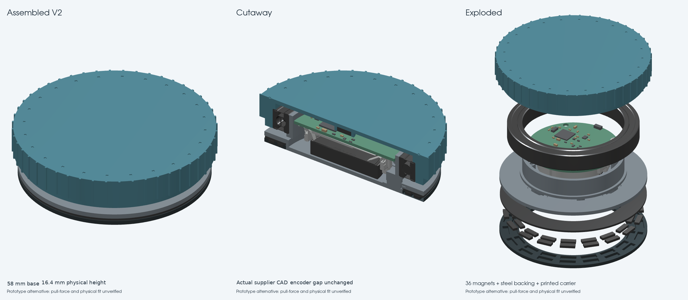
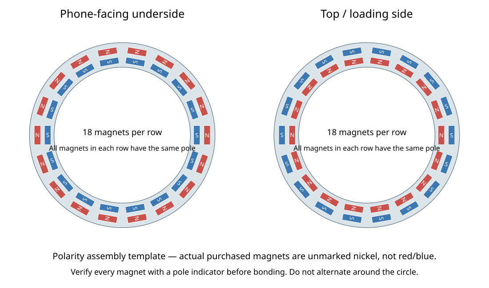

The original premade-ring base is preserved as V1. This alternative uses 36 small magnets, a steel backing and a printed carrier. The image is rendered from the actual source CAD.
Fit/force-test prototype. Similar holding force is an acceptance target and has not been measured. V2 needs more assembly work and costs more at the documented US magnet price. Retain V1 until the phone/case pull, slip, adhesive and magnetic-sensing tests pass.

Full sourcing, assembly, print and test instructions · Circuit viewer (V1 mechanical reference)
| Dimension | V2 |
|---|---|
| Physical height | 16.4 mm, unchanged |
| Base diameter | 58 mm, unchanged |
| Nominal encoder gap | 1.8 mm, unchanged |
| Printed product parts | Base + carrier + one existing cap |
| Attachment magnets | 36 × M0601, axial N50, 6 × 2 × 1 mm |
| Backing | Custom low-carbon steel, OD57.6 × ID43.0 × 0.762 mm |
Phone-facing underside: all inner magnets S, all outer magnets N. Labels reverse when loading from above. Check every magnet before bonding. The colors below identify poles; the purchased magnets are unmarked nickel.

CAD/mesh, clearance, actual slicer and electrical regression checks passed. Physical fit, holding force, adhesive aging, bearing retention, Hall counting and assembled RF qualification remain open. No parts have been ordered.